FMOD Studio User Manual 2.02
- Welcome to FMOD Studio
- FMOD Studio Concepts
- Organizing the Project
- Authoring Events
- Working with Instruments
- Managing Assets
- Parameters
- Getting Events into Your Game
- Mixing
- The Sandbox
- Editing During Live Update
- Profiling
- Dialogue and Localization
- Using Source Control
- Supporting Downloadable and User-generated Content
- Advanced Topics
- Quick Start Tutorial
- Event Macros Drawer Reference
- Instrument Reference
- Plug-in Reference
- Modulator Reference
- Parameters Reference
- Scripting
- Scripting API Reference
- Keyboard Shortcut Reference
- Troubleshooting
- Glossary
- Appendix: Celeste Getting Started Guide
- Appendix: Reaper Integration
1. Welcome to FMOD Studio | New in FMOD Studio 2.00
What's New in FMOD Studio 2.00?
FMOD Studio 2.00 defines a new game audio content creation process, giving complete control to audio artists. New design tools and a live workflow give creative freedom with instant feedback.
Below are some feature highlights from FMOD Studio 2.00.
Parameters
Studio 2.00 greatly expands the potential of parameters, simplifies their management, and improves their flexibility.
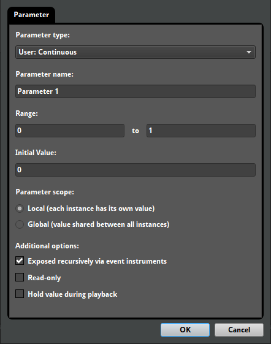
Labeled parameters
Labeled parameters can be used to discretely align parameter content and automations to a set of labeled values.
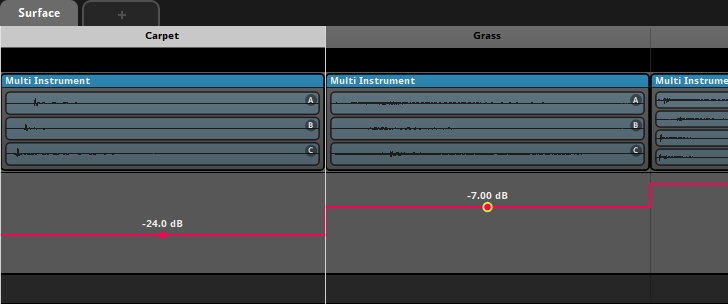
Labeled parameters can be defined when creating or editing a parameter. Insertion, reordering, and removal of labels is gracefully handled when when editing labeled parameters.
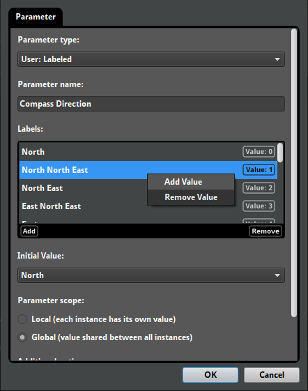
Discrete parameters
Discrete parameters use whole numbers instead of decimal values. As with labeled parameters, discrete parameters can be used to discretely align parameter content and automations.
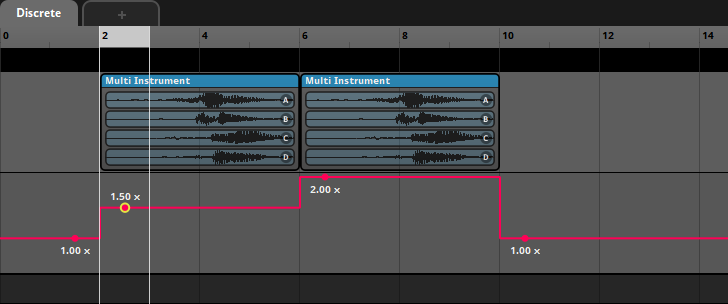
Global parameters
Global parameters share the same playback position between all event instances. This makes it easy for the game code to set a single parameter value that affects many event instances.
Global parameters also allow for automation of properties in the global mixer.

Built-in speed parameter
The new speed built-in parameter is automatically set to the speed of the event instance it's used in (determined by the velocity of the event instance relative to that of the listener). This can be used to automate properties of an event instance based on how fast it is moving.
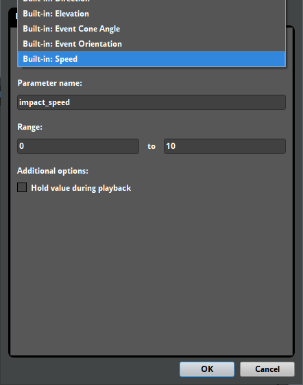
Flexible parameters
Many changes have been made to expand how flexibly parameters can be used. For example, it is now possible to automate one parameter by the value of another parameter. This can be used to remap the value of a parameter.
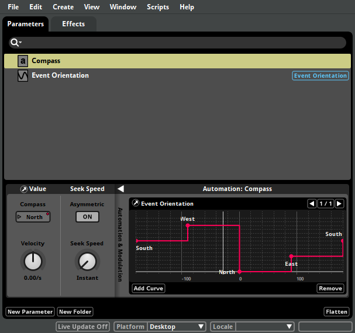
Additionally, parameters can now be marked as read-only. This is useful for indicating that a parameter doesn't need to be set in code. For example, this can be used when a parameter should only be driven by modulation.
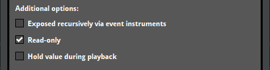
Finally, support has been added for editing a parameter's type after it is created. This includes gracefully handling changing a continuous parameter to a labeled parameter and vice versa.
Modulation
In Studio 2.00, the improved modulation system allows for a wider range of creative options.
LFO modulator
The LFO modulator is a new type of modulation that applies a continuous low-frequency oscillation to the value of a property.
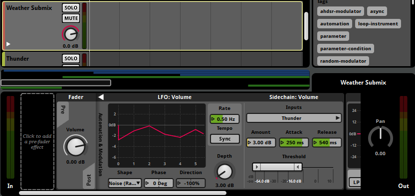
LFO modulators feature many wave shapes: Sine, Square, Triangle, Saw Up, Saw Down, Noise (Stepped), and Noise (Ramped). These can be previewed in the graph. When used in events, LFO modulators can be synchronized to the tempo.
Global modulation
It is now possible to directly add modulation to properties in the global mixer. This makes it easy to apply sidechain or LFO modulation directly in the global mix.
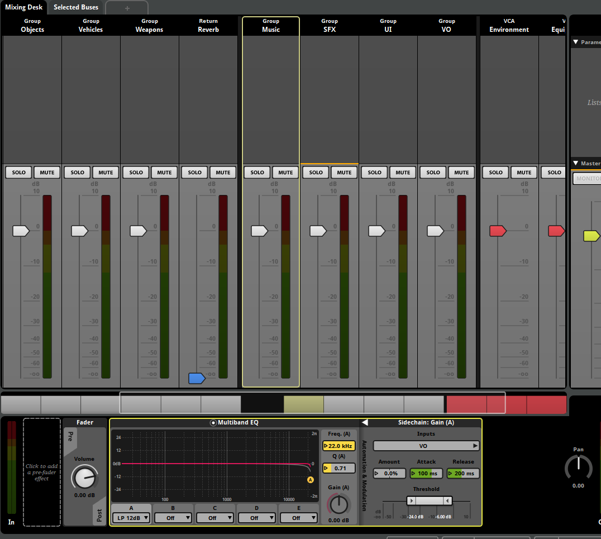
AHDSR modulator
AHDSR modulators now feature a final value property. This allows AHDSR modulators to have a custom release value.
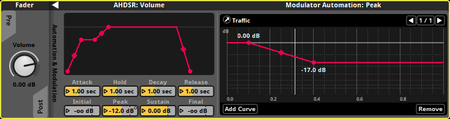
All properties of AHDSR modulators now support automation.
Reaper integration
The newly added Reaper integration streamlines the process of importing and updating assets when working with Reaper.
Linked project assets
The Reaper integration allows for the linking of a Reaper project as a linked project asset. Linked audio assets can be updated and refreshed automatically if changes in the source Reaper project file are detected.
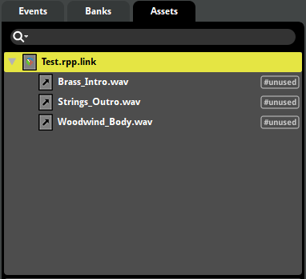
Importing timelines
It is also possible to directly import the timeline of a Reaper project as an event. This will create instruments and markers that align to the source Reaper project content.
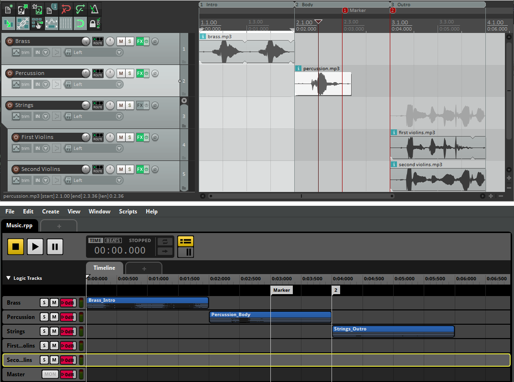
Workflow enhancements
Studio 2.00 streamlines the editor and event creation workflow, improving productivity and project tidiness.
Editor workflow
Keyboard shortcuts can now be easily customized from the preferences dialog.
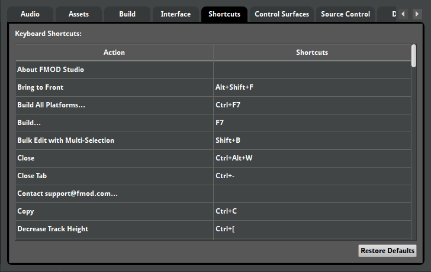
Studio 2.00 also supports auto-saving projects. When reopening a project that failed to gracefully close, you'll be given the option to recover any lost work.
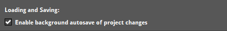
Event workflow
New features have been added to assist in keeping events tidy. Firstly, it is now possible to name loop regions. This allows you to transition directly to a loop region without needing to add a destination marker.
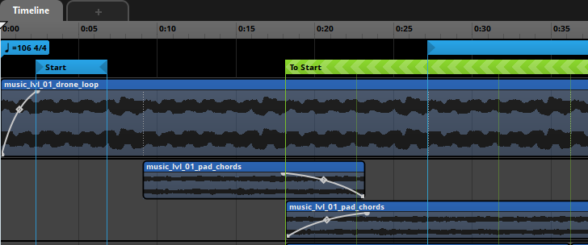
It is also possible to remove the timeline sheet of an event.
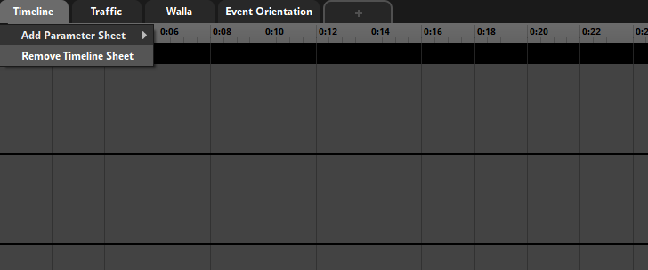
Finally, the interface for sidechain inputs and toggleable properties have been improved, making it easier to inspect settings at a glance.
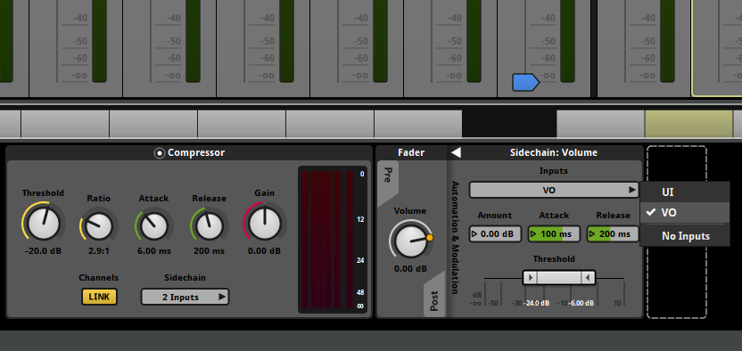
Transition timeline crossfades
It is now possible to overlap the source and destination regions of transition timelines. This makes it possible to crossfade between the source and destination of timeline transitions, on a per-track basis.
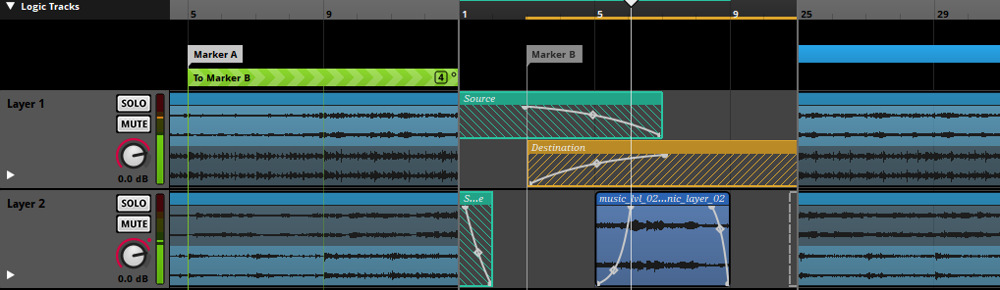
This feature was added late in Studio 1.10 but is worth highlighting here.
Multi instruments
Multi instruments now accommodate a much wider range of playback behaviors.
Nested multi instruments
It is now possible to nest multi instruments in other multi instruments. The new interface also allows for direct automation of playlist item properties.
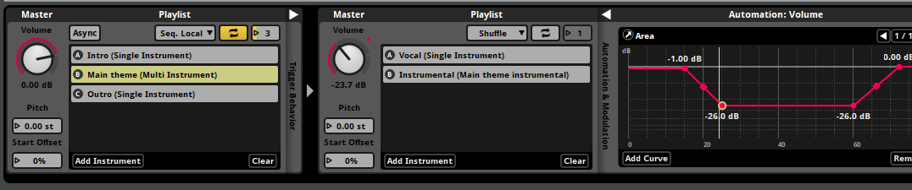
Playlists
Late in Studio 1.10, multi instruments received a number of new controls for playlists. This includes new playlist selection modes and explicit control over the loop count.
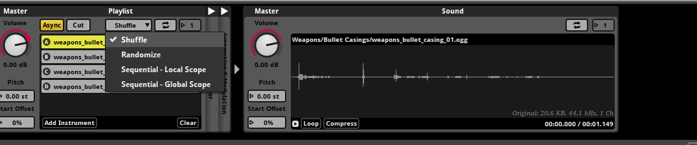
Preset effect chains
Preset effect chains are chains of effects that can be shared between multiple events. This makes it easy to manage common effect configurations throughout a project.
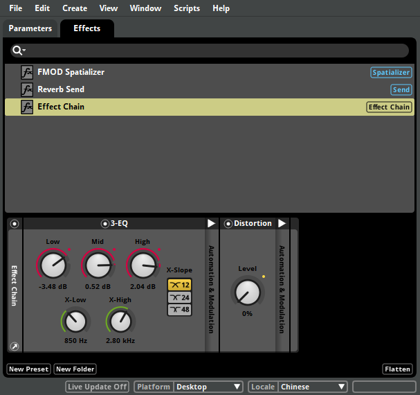
Existing preset effects can be wrapped in an effect chain through the context menu.
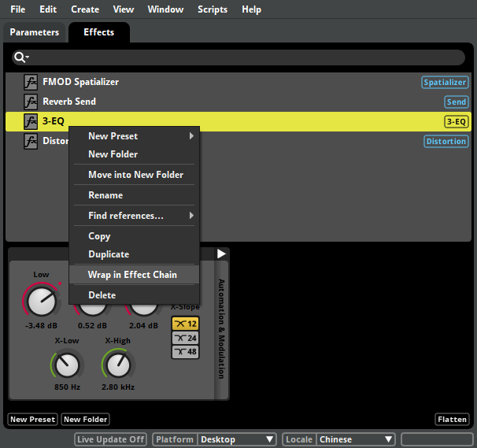
Dialog and localization
Studio 2.00 adds support for defining locales per project, allowing for easy management of localized content.
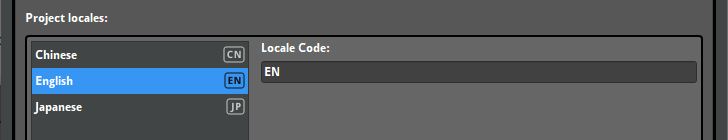
Once locales have been added, they can be used in conjunction with localized audio tables. Localized audio tables allow for asset data to be defined per-locale, which is used to create different versions of dialog banks for each locale.

The auditioning workflow for audio tables has also been improved. You can now set an audio table as the placeholder for a programmer instrument, allowing for quick auditioning of different audio table assets in the event editor.
Command instruments
Command instruments are general purpose instruments that are used to control playback. In Studio 2.00, they can currently be used to have one event stop all instances of another event.
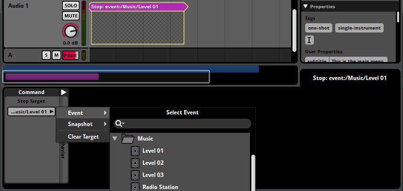
The functionality of command instruments will be expanded in future updates.
Downloadable and user-generated content
New features have been added to improve support for downloadable and user-generated content.
Optional master bank
In 2.00, the any bank can be optionally marked as a master bank. This removes the restriction for projects to have exactly one master bank.
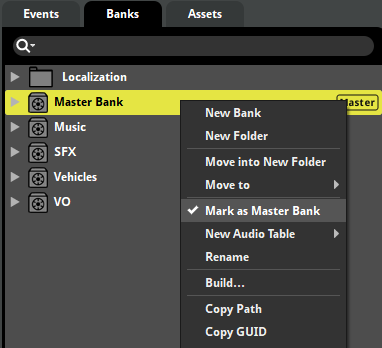
Not having a master bank, or having multiple master banks, can be used to meet certain DLC and UGC requirements.
Project packaging and UGC
The "File > Package project..." menu option has been extended to allow for finer control over the data types to be included in the package. This makes it possible to export a project template for user-generated content.
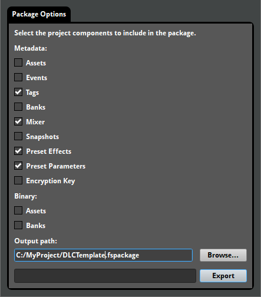
Bank building
A number of features have been added to improve the flexibility of the build pipeline.
Bank encryption
Banks can be encrypted during bank building. This provides a quick way to obfuscate the audio data in a built bank.
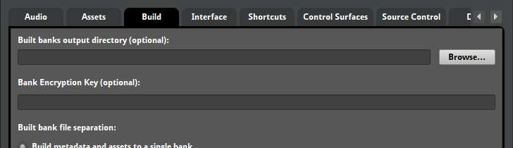
Encoding settings
Encoding settings now feature a sample rate mode. This makes it possible to specify a fixed sample rate, inherit the source asset's sample rate, or allow an optimal sample rate to be automatically determined. The sample rate can also be explicitly set when using the Vorbis encoding format.
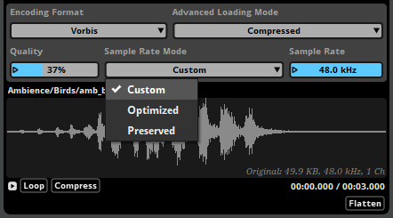
Bank folder mirroring
An option has been added to allow the built bank output to mirror the folder structure of the banks browser. This is useful for projects with many banks or projects that require banks be output to separate paths.

Plug-in data
Data-based plug-in properties can now be stored as binary assets in the assets browser. This makes it easy to iterate on content that requires frequent updating of plug-in data.
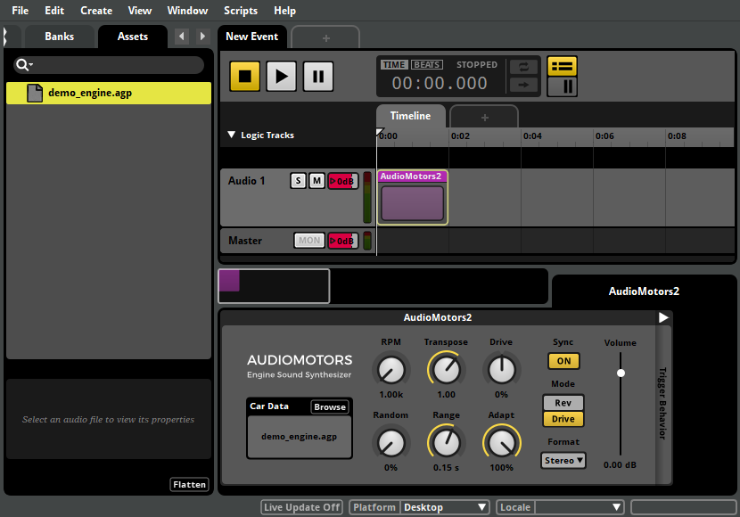
Files that are dragged onto a plug-in's data parameter are automatically imported to the assets browser. To keep the assets browser tidy, a new option has been added to hide unimported assets in the assets browser that are not of a known audio file type.
In addition to the new features listed, we've made a number of additional stability and usability enhancements. Please see the detailed revision history for full details.